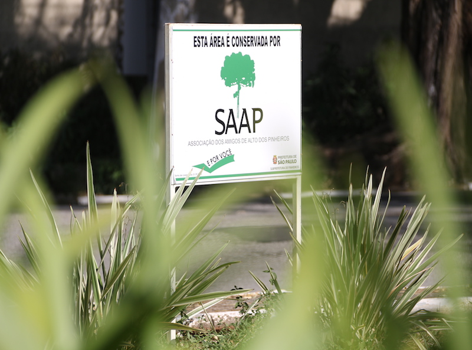

Organização usa ações de engajamento para driblar a crise e aumentar em 25% sua base de associados
18 de Maio de 2017 às 07:00
Em períodos de retração econômica, muitas organizações da sociedade civil veem encolher sua base de doadores, o que é uma ameaça à sustentabilidade da instituição. Mas uma associação de bairro driblou a crise e experimentou um crescimento substancial de financiadores. O segredo? Engajar as pessoas em atividades ligadas a temas que façam parte do rol de interesse delas.
"Nos últimos dois anos, tivemos um aumento de 25% em nossa base de associados, mesmo com a crise", conta Márcia Woods, vice-presidente da diretoria executiva da Associação dos Amigos de Alto dos Pinheiros (SAAP), bairro da zona oeste da capital paulista.
Foi revisitando o passado que a SAAP buscou inspiração para incrementar o número de filiados. "Em 1998, houve uma grande mobilização em torno de um projeto que tinha como objetivo controlar o aumento do tráfego no bairro, mantendo suas características residenciais. Na época, registramos um bom crescimento na nossa base", lembra.
A estratégia de trabalhar o engajamento surgiu após a constatação de que não bastava comunicar as ações desenvolvidas pela entidade. “Quando ficávamos apenas no nível informativo, conseguíamos pouca adesão", afirma Márcia.
Hoje, a SAAP conta com 250 associados, mas a quantidade de representados é bem maior e corresponde a quase metade dos moradores da região — o bairro tem pouco mais de 43 mil habitantes, segundo dados da Prefeitura de São Paulo. A diferença de números é facilmente explicada: quem se associa não é uma pessoa física, mas uma casa, uma rua, um edifício ou um conjunto de prédios.
Conhecer para compreender
Há quatro anos à frente da SAAP, a atual gestão resolveu fazer uma pergunta que, se parece óbvia, era inédita: afinal, o que querem os moradores de Alto dos Pinheiros?
"Realizamos uma pesquisa bem informal, pela internet, para descobrir quais eram os assuntos que mais interessavam as pessoas. Muitas disseram que se preocupavam com as áreas verdes e com a segurança", conta Márcia, que completa: "Cerca de metade das respostas vieram de gente que não era associada.”
Com base nos resultados, a SAAP realizou ao longo de 2016 uma série de reuniões e aproveitou os encontros para coletar propostas com a finalidade de tornar o Alto dos Pinheiro um lugar mais seguro. A entidade conseguiu, a reboque, um grande número de novos filiados.
Para estreitar o diálogo com os moradores, a associação lançou mão de ferramentas como Facebook — fazendo postagens segmentadas por assunto e local —, mailing e até mesmo cartas entregues de porta em porta. Entre os pontos trabalhados nessas comunicações está a preservação de áreas verdes do bairro, um dos mais arborizados de São Paulo.
As ações de engajamento, aliadas a uma melhor divulgação de suas realizações — com a contratação de uma empresa responsável pela produção de conteúdos —, também conferiram à SAAP mais legitimidade. A associação tem se tornado uma mediadora entre demandas dos moradores e o poder público.
"No final de 2016, um grupo realizou um abaixo-assinado sobre os constantes cortes de luz em uma rua do bairro. Nós fizemos a ponte com a Eletropaulo para buscar resolver a questão. Além disso, também recebemos muitas reclamações sobre questões de zeladoria (varrição de rua e poda de árvores), que levamos ao poder público", relata Márcia.
Em 2016, a SAAP produziu um mapa com a localização de todos os seus associados. “Nós percebemos uma coincidência entre as áreas onde temos mais projetos e aquelas onde há mais associados. Observando essa concentração, podemos distribuir nosso foco de atuação e segmentar mais nossas ações, saber quais ‘brigas’ comprar”, conclui.
"Nos últimos dois anos, tivemos um aumento de 25% em nossa base de associados, mesmo com a crise", conta Márcia Woods, vice-presidente da diretoria executiva da Associação dos Amigos de Alto dos Pinheiros (SAAP), bairro da zona oeste da capital paulista.
Foi revisitando o passado que a SAAP buscou inspiração para incrementar o número de filiados. "Em 1998, houve uma grande mobilização em torno de um projeto que tinha como objetivo controlar o aumento do tráfego no bairro, mantendo suas características residenciais. Na época, registramos um bom crescimento na nossa base", lembra.
A estratégia de trabalhar o engajamento surgiu após a constatação de que não bastava comunicar as ações desenvolvidas pela entidade. “Quando ficávamos apenas no nível informativo, conseguíamos pouca adesão", afirma Márcia.
Hoje, a SAAP conta com 250 associados, mas a quantidade de representados é bem maior e corresponde a quase metade dos moradores da região — o bairro tem pouco mais de 43 mil habitantes, segundo dados da Prefeitura de São Paulo. A diferença de números é facilmente explicada: quem se associa não é uma pessoa física, mas uma casa, uma rua, um edifício ou um conjunto de prédios.
Conhecer para compreender
Há quatro anos à frente da SAAP, a atual gestão resolveu fazer uma pergunta que, se parece óbvia, era inédita: afinal, o que querem os moradores de Alto dos Pinheiros?
"Realizamos uma pesquisa bem informal, pela internet, para descobrir quais eram os assuntos que mais interessavam as pessoas. Muitas disseram que se preocupavam com as áreas verdes e com a segurança", conta Márcia, que completa: "Cerca de metade das respostas vieram de gente que não era associada.”
Com base nos resultados, a SAAP realizou ao longo de 2016 uma série de reuniões e aproveitou os encontros para coletar propostas com a finalidade de tornar o Alto dos Pinheiro um lugar mais seguro. A entidade conseguiu, a reboque, um grande número de novos filiados.
Para estreitar o diálogo com os moradores, a associação lançou mão de ferramentas como Facebook — fazendo postagens segmentadas por assunto e local —, mailing e até mesmo cartas entregues de porta em porta. Entre os pontos trabalhados nessas comunicações está a preservação de áreas verdes do bairro, um dos mais arborizados de São Paulo.
As ações de engajamento, aliadas a uma melhor divulgação de suas realizações — com a contratação de uma empresa responsável pela produção de conteúdos —, também conferiram à SAAP mais legitimidade. A associação tem se tornado uma mediadora entre demandas dos moradores e o poder público.
"No final de 2016, um grupo realizou um abaixo-assinado sobre os constantes cortes de luz em uma rua do bairro. Nós fizemos a ponte com a Eletropaulo para buscar resolver a questão. Além disso, também recebemos muitas reclamações sobre questões de zeladoria (varrição de rua e poda de árvores), que levamos ao poder público", relata Márcia.
Em 2016, a SAAP produziu um mapa com a localização de todos os seus associados. “Nós percebemos uma coincidência entre as áreas onde temos mais projetos e aquelas onde há mais associados. Observando essa concentração, podemos distribuir nosso foco de atuação e segmentar mais nossas ações, saber quais ‘brigas’ comprar”, conclui.
Notícias mais populares
Gestão
Em agosto de 2017, a revista ÉPOCA e o Instituto Doar divulgaram a primeira ediç&...
Contexto e tendências
Criado para tornar mais transparentes as parcerias entre a administração públic...
Profissional captador
A captação de recursos é fundamental para a sustentabilidade de uma organiza&cc...